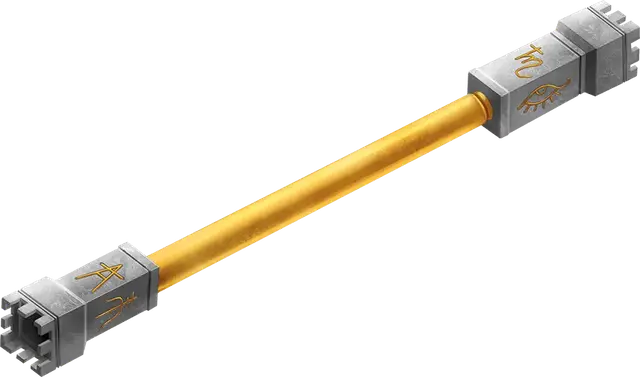

Жезл поглощения
Rod of Absorption
Жезл, очень редкий (требуется настройка)

Рекомендованная стоимость 40 000 ЗМ
Пока вы держите этот жезл, вы можете Реакцией поглотить заклинание, если оно нацеливается только на вас и не создаёт области воздействия. При этом эффект заклинания отменяется, а энергия заклинания (но не само заклинание) сохраняется в жезле. Сохраняемая энергия имеет тот же уровень, что и уровень, на котором было сотворено поглощённое заклинание. Отменённое заклинание не оказывает эффекта, а ресурсы на его сотворение утрачиваются. За всё время своего существования жезл может поглотить не более 50 уровней энергии; как только жезл поглощает 50 уровней энергии, он больше не может поглощать энергию, и если на вас нацеливается заклинание, энергию которого жезл не может вместить, он не может повлиять на это заклинание.
Когда вы настраиваетесь на жезл, вы узнаёте, сколько уровней энергии в нём сохранено сейчас, и сколько было сохранено за всё время его существования.
Если вы заклинатель и держите жезл, вы можете преобразовывать сохранённую в жезле энергию в ячейки заклинаний, которые можно использовать для сотворения известных вам или подготовленных вами заклинаний. Вы можете создавать таким образом только ячейки уровнем не больше 5 и не больше, чем ваши собственные. При сотворении заклинания таким образом вы тратите вместо вашей ячейки соответствующее число сохранённых в жезле уровней; в остальных отношениях вы сотворяете заклинание как обычно. Например, вы можете потратить 3 сохранённых уровня вместо ячейки 3-го уровня.
Когда жезл находят, в нём обычно уже сохранено 1к10 уровней энергии заклинаний. Когда жезл больше не может поглощать заклинания, и в нём не остаётся сохранённой энергии, он становится немагическим.